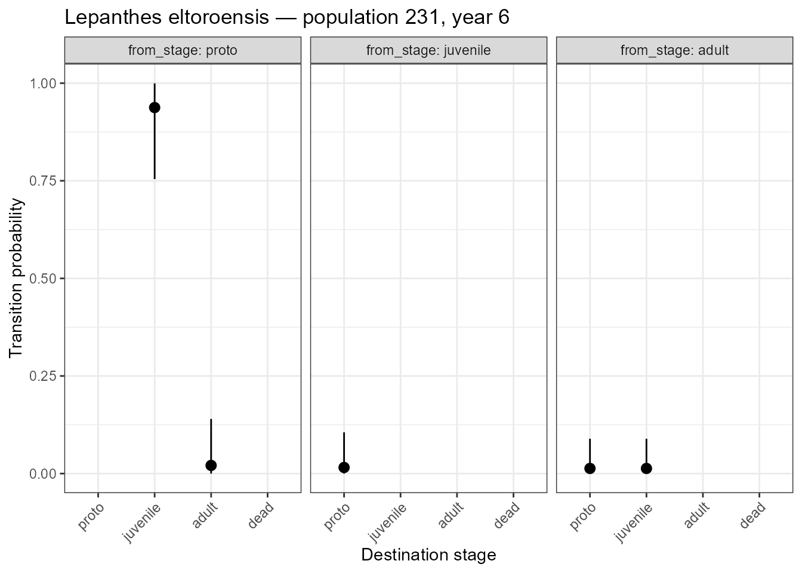
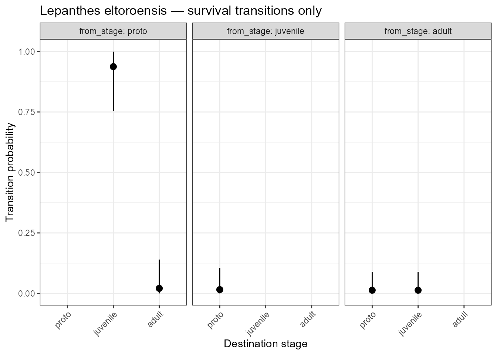

01 Quick start: credible intervals for transition probabilities
Raymond Tremblay
2026-04-11
Source:vignettes/quick_start.Rmd
quick_start.RmdWhat this vignette shows
This is a minimal worked example of the two most important functions
in raretrans:
-
transition_CrI()— compute Bayesian credible intervals for every transition probability in a stage-structured matrix -
plot_transition_CrI()— visualise those intervals
If you are new to Bayesian statistics, beta distributions, or
Dirichlet priors, see the vignette Credible intervals for transition
probabilities: Cypripedium calceolus
(vignette("credible_intervals")), which explains those
concepts in detail.
The data
We use a single transition period from population 231 of
Lepanthes eltoroensis, a rare Puerto Rican orchid monitored
annually. The data are included in raretrans as
L_elto (see ?L_elto).
The population has three stages:
| Code | Stage |
|---|---|
p |
Proto-adult |
j |
Juvenile |
a |
Adult |
Stage m (missing next year) is treated as
death.
From year 6 of population 231 we observed:
# Observed transitions (from -> to): n individuals
# a -> a : 18 j -> a : 2 p -> j : 1
# j -> j : 13 p -> p : 8 p -> m : 2 (died)
#
# No deaths observed in adults or juveniles — a classic holey matrix!
# raretrans handles this by placing prior weight on the dead fate.Build the input matrices
raretrans needs a TF list with two matrices
(T for transitions, F for fertility) and a
vector N of observed individuals per stage.
library(raretrans)
stage_names <- c("proto", "juvenile", "adult")
# Transition matrix T (column = source stage, row = destination stage)
# Columns must be in the same order as stage_names
T_mat <- matrix(
c(8, 0, 0, # proto -> proto, juvenile, adult
1, 13, 0, # juvenile -> proto, juvenile, adult
0, 2, 18), # adult -> proto, juvenile, adult
nrow = 3, ncol = 3, byrow = TRUE,
dimnames = list(stage_names, stage_names)
)
# Fertility matrix F (no sexual reproduction observed this period)
F_mat <- matrix(0, nrow = 3, ncol = 3,
dimnames = list(stage_names, stage_names))
TF <- list(T = T_mat, F = F_mat)
# Observed number of individuals at start of period (column sums of T + deaths)
N <- c(proto = 11, juvenile = 15, adult = 18)
T_mat
#> proto juvenile adult
#> proto 8 0 0
#> juvenile 1 13 0
#> adult 0 2 18Note that adults and juveniles have no observed
deaths — their columns sum to less than N only
because of transitions to other stages, not mortality. This is the holey
matrix problem: a naive estimate would give survival probability = 1.0,
which is biologically impossible.
Compute credible intervals
cri <- transition_CrI(TF, N, stage_names = stage_names)
#> Warning in stats::qbeta(alpha_lower, a, b): NaNs produced
#> Warning in stats::qbeta(alpha_upper, a, b): NaNs produced
#> Warning in stats::qbeta(alpha_lower, a, b): NaNs produced
#> Warning in stats::qbeta(alpha_upper, a, b): NaNs produced
#> Warning in stats::qbeta(alpha_lower, a, b): NaNs produced
#> Warning in stats::qbeta(alpha_upper, a, b): NaNs produced
cri
#> from_stage to_stage mean lower upper
#> 1 proto proto 7.35416667 NaN NaN
#> 2 proto juvenile 0.93750000 7.543166e-01 0.99941091
#> 3 proto adult 0.02083333 2.317192e-08 0.13998339
#> 4 proto dead -7.31250000 NaN NaN
#> 5 juvenile proto 0.01562500 1.714579e-08 0.10560360
#> 6 juvenile juvenile 12.20312500 NaN NaN
#> 7 juvenile adult 1.89062500 NaN NaN
#> 8 juvenile dead -13.10937500 NaN NaN
#> 9 adult proto 0.01315789 1.434719e-08 0.08916703
#> 10 adult juvenile 0.01315789 1.434719e-08 0.08916703
#> 11 adult adult 17.06578947 NaN NaN
#> 12 adult dead -16.09210526 NaN NaNEven though no adult deaths were observed,
transition_CrI() returns a non-zero credible interval for
the dead fate of adults and juveniles. The prior places a small but
non-zero weight on mortality, producing biologically realistic
estimates.
Visualise
Including the dead fate
plot_transition_CrI(cri,
title = "Lepanthes eltoroensis — population 231, year 6")
#> Warning: Removed 7 rows containing missing values or values outside the scale range
#> (`geom_pointrange()`).
Posterior transition probabilities with 95% credible intervals. Note the non-zero dead fate for adults and juveniles despite zero observed deaths.
The wide credible intervals for the dead fate of adults and juveniles reflect genuine uncertainty — we know mortality must be possible, but we have no direct observations to estimate its rate precisely.
Excluding the dead fate
plot_transition_CrI(cri,
include_dead = FALSE,
title = "Lepanthes eltoroensis — survival transitions only")
#> Warning: Removed 4 rows containing missing values or values outside the scale range
#> (`geom_pointrange()`).
Posterior transition probabilities for survival transitions only.
Next steps
| Topic | Vignette |
|---|---|
| Full posterior density plots | vignette("credible_intervals") |
| Effect of prior weight | vignette("credible_intervals") |
| Multi-period analysis | vignette("onepopperiod") |
| Prior choice and Bayesian background | vignette("transition_priors") |
Reference
Tremblay, R. L., Tyre, A. J., Pérez, M.-E., & Ackerman, J. D. (2021). Population projections from holey matrices: Using prior information to estimate rare transition events. Ecological Modelling, 447, 109526. https://doi.org/10.1016/j.ecolmodel.2021.109526